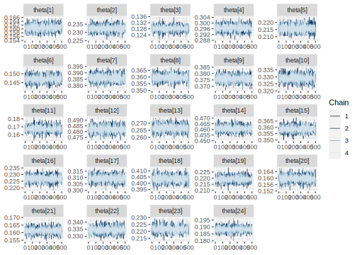

4.5 Modelo Binomial
Cuando se dispone de una muestra aleatoria de variables con distribución Bernoulli \(Y_1,\ldots,Y_n\), la inferencia Bayesiana se puede llevar a cabo usando la distribución Binomial, puesto que es bien sabido que la suma de variables aleatorias Bernoulli
\[ \begin{equation*} S=\sum_{i=1}^nY_i \end{equation*} \]
sigue una distribución Binomial. Es decir:
\[ \begin{equation} p(S \mid \theta)=\binom{n}{s}\theta^s(1-\theta)^{n-s}I_{\{0,1,\ldots,n\}}(s), \end{equation} \]
Nótese que la distribución Binomial es un caso general para la distribución Bernoulli, cuando \(n=1\). Por lo tanto es natural suponer que distribución previa del parámetro \(\theta\) estará dada por
\[ \begin{equation} p(\theta \mid \alpha,\beta)= \frac{1}{Beta(\alpha,\beta)}\theta^{\alpha-1}(1-\theta)^{\beta-1}I_{[0,1]}(\theta). \end{equation} \]
La distribución posterior del parámetro \(\theta\) sigue una distribución
\[ \begin{equation*} \theta \mid S \sim Beta(s+\alpha,\beta-s+n) \end{equation*} \]
Ahora, cuando se tiene una sucesión de variables aleatorias \(S_1,\ldots,S_i, \ldots,S_k\) independientes y con distribución \(Binomial(n_i,\theta_i)\) para \(i=1,\ldots,k\), entonces la distribución posterior del parámetro de interés \(\theta_i\) es
\[ \begin{equation*} \theta_i \mid s_i \sim Beta\left(s_i+\alpha,\ \beta+ n_i- s_i\right) \end{equation*} \]
4.5.1 Práctica en STAN
Sea \(S_k\) el conteo de personas en condición de pobreza en el \(k-ésimo\) departamento en la muestra.
dataS <- encuesta %>%
transmute(
dam = dam_ee,
y = ifelse(ingcorte < lp, 1,0)
) %>% group_by(dam) %>%
summarise(nd = n(), #Número de ensayos
Sd = sum(y) #Número de éxito
)
tba(dataS)| dam | nd | Sd |
|---|---|---|
| 05 | 45467 | 7301 |
| 08 | 44321 | 10297 |
| 11 | 32213 | 4128 |
| 13 | 35610 | 10560 |
| 15 | 26485 | 5717 |
| 17 | 30764 | 4524 |
| 18 | 28842 | 11134 |
| 19 | 34357 | 12348 |
| 20 | 32454 | 12203 |
| 23 | 31986 | 10528 |
| 25 | 9068 | 1516 |
| 27 | 26828 | 12934 |
| 41 | 30728 | 8188 |
| 44 | 35618 | 16412 |
| 47 | 37634 | 13500 |
| 50 | 29317 | 6653 |
| 52 | 28927 | 8949 |
| 54 | 31384 | 12663 |
| 63 | 28276 | 6195 |
| 66 | 29199 | 4664 |
| 68 | 31778 | 5127 |
| 70 | 35525 | 11881 |
| 73 | 28416 | 6295 |
| 76 | 37556 | 7073 |
Creando código de STAN
data {
int<lower=0> K; // Número de provincia
int<lower=0> n[K]; // Número de ensayos
int<lower=0> s[K]; // Número de éxitos
real a;
real b;
}
parameters {
real<lower=0, upper=1> theta[K]; // theta_d|s_d
}
model {
for(kk in 1:K) {
s[kk] ~ binomial(n[kk], theta[kk]);
}
to_vector(theta) ~ beta(a, b);
}
generated quantities {
real spred[K]; // vector de longitud K
for(kk in 1:K){
spred[kk] = binomial_rng(n[kk],theta[kk]);
}
}Preparando el código de STAN
Binomial2 <- "Recursos/Día1/Sesion4/Data/modelosStan/3Binomial.stan"Organizando datos para STAN
sample_data <- list(K = nrow(dataS),
s = dataS$Sd,
n = dataS$nd,
a = 1,
b = 1)Para ejecutar STAN en R tenemos la librería rstan
options(mc.cores = parallel::detectCores())
model_Binomial2 <- stan(
file = Binomial2, # Stan program
data = sample_data, # named list of data
verbose = FALSE,
warmup = 500, # number of warmup iterations per chain
iter = 1000, # total number of iterations per chain
cores = 4, # number of cores (could use one per chain)
)La estimación del parámetro \(\theta\) es:
summary(model_Binomial2, pars = "theta")$summary %>% tba()| mean | se_mean | sd | 2.5% | 25% | 50% | 75% | 97.5% | n_eff | Rhat | |
|---|---|---|---|---|---|---|---|---|---|---|
| theta[1] | 0.1606 | 0e+00 | 0.0018 | 0.1572 | 0.1593 | 0.1606 | 0.1618 | 0.1641 | 4995.662 | 0.9987 |
| theta[2] | 0.2323 | 0e+00 | 0.0020 | 0.2285 | 0.2309 | 0.2323 | 0.2338 | 0.2362 | 5068.657 | 0.9991 |
| theta[3] | 0.1281 | 0e+00 | 0.0019 | 0.1246 | 0.1269 | 0.1281 | 0.1294 | 0.1318 | 4302.302 | 0.9989 |
| theta[4] | 0.2965 | 0e+00 | 0.0023 | 0.2920 | 0.2949 | 0.2965 | 0.2981 | 0.3009 | 5872.753 | 0.9982 |
| theta[5] | 0.2159 | 0e+00 | 0.0026 | 0.2109 | 0.2141 | 0.2158 | 0.2176 | 0.2210 | 4494.272 | 0.9993 |
| theta[6] | 0.1471 | 0e+00 | 0.0019 | 0.1433 | 0.1458 | 0.1471 | 0.1484 | 0.1509 | 6398.598 | 0.9992 |
| theta[7] | 0.3861 | 0e+00 | 0.0028 | 0.3807 | 0.3842 | 0.3861 | 0.3880 | 0.3914 | 5415.280 | 0.9986 |
| theta[8] | 0.3594 | 0e+00 | 0.0025 | 0.3547 | 0.3577 | 0.3594 | 0.3612 | 0.3642 | 4735.259 | 0.9985 |
| theta[9] | 0.3760 | 0e+00 | 0.0027 | 0.3708 | 0.3741 | 0.3760 | 0.3779 | 0.3814 | 4213.212 | 0.9986 |
| theta[10] | 0.3292 | 0e+00 | 0.0025 | 0.3243 | 0.3275 | 0.3292 | 0.3308 | 0.3341 | 5643.390 | 0.9989 |
| theta[11] | 0.1673 | 1e-04 | 0.0039 | 0.1600 | 0.1647 | 0.1673 | 0.1699 | 0.1751 | 4524.756 | 0.9998 |
| theta[12] | 0.4821 | 0e+00 | 0.0030 | 0.4760 | 0.4802 | 0.4820 | 0.4841 | 0.4883 | 6602.060 | 0.9987 |
| theta[13] | 0.2665 | 0e+00 | 0.0025 | 0.2615 | 0.2647 | 0.2665 | 0.2683 | 0.2715 | 6158.453 | 0.9989 |
| theta[14] | 0.4608 | 0e+00 | 0.0027 | 0.4555 | 0.4590 | 0.4608 | 0.4626 | 0.4661 | 5894.068 | 0.9983 |
| theta[15] | 0.3587 | 0e+00 | 0.0025 | 0.3539 | 0.3570 | 0.3587 | 0.3605 | 0.3637 | 5052.024 | 0.9988 |
| theta[16] | 0.2270 | 0e+00 | 0.0025 | 0.2221 | 0.2253 | 0.2271 | 0.2287 | 0.2317 | 4553.205 | 0.9985 |
| theta[17] | 0.3094 | 0e+00 | 0.0028 | 0.3040 | 0.3075 | 0.3093 | 0.3113 | 0.3148 | 5761.156 | 0.9983 |
| theta[18] | 0.4035 | 0e+00 | 0.0028 | 0.3978 | 0.4015 | 0.4035 | 0.4055 | 0.4091 | 4766.386 | 0.9999 |
| theta[19] | 0.2191 | 0e+00 | 0.0024 | 0.2144 | 0.2174 | 0.2190 | 0.2207 | 0.2240 | 5580.557 | 0.9987 |
| theta[20] | 0.1597 | 0e+00 | 0.0022 | 0.1553 | 0.1583 | 0.1598 | 0.1612 | 0.1640 | 4125.715 | 0.9988 |
| theta[21] | 0.1614 | 0e+00 | 0.0020 | 0.1574 | 0.1601 | 0.1614 | 0.1627 | 0.1653 | 5438.808 | 0.9990 |
| theta[22] | 0.3345 | 0e+00 | 0.0024 | 0.3297 | 0.3329 | 0.3344 | 0.3361 | 0.3395 | 4989.644 | 0.9994 |
| theta[23] | 0.2216 | 0e+00 | 0.0024 | 0.2168 | 0.2200 | 0.2216 | 0.2232 | 0.2263 | 4874.975 | 0.9993 |
| theta[24] | 0.1883 | 0e+00 | 0.0020 | 0.1844 | 0.1870 | 0.1883 | 0.1896 | 0.1922 | 4294.990 | 0.9984 |
Para validar las cadenas
mcmc_areas(as.array(model_Binomial2, pars = "theta"))
mcmc_trace(as.array(model_Binomial2, pars = "theta"))
y_pred_B <- as.array(model_Binomial2, pars = "spred") %>%
as_draws_matrix()
rowsrandom <- sample(nrow(y_pred_B), 200)
y_pred2 <- y_pred_B[rowsrandom, ]
g1 <- ggplot(data = dataS, aes(x = Sd))+
geom_histogram(aes(y = ..density..)) +
geom_density(size = 2, color = "blue") +
labs(y = "")+
theme_bw(20)
g2 <- ppc_dens_overlay(y = dataS$Sd, y_pred2)
g1/g2